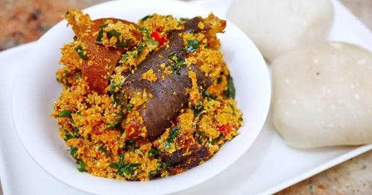

Egusi recipe

Description
Egusi soup is a hearty, protein-rich West African staple made from ground melon seeds.
It features a rich, nutty flavor profile with a stew-like consistency, packed with
varied meats, fish, and leafy greens. It is traditionally eaten with soft doughs known
as "swallows"
Ingredients
- The Base: Ground egusi (shelled melon seeds) and palm oil.
The seeds are ground into a paste or powder and cooked to form soft, savory
"lumps" that give the soup its hearty texture.
- Proteins: A mix of assorted meats (such as beef, goat, or
tripe) and seafood (such as smoked fish, stockfish, and crayfish powder).
- Vegetables: Leafy greens like spinach, ugu (fluted pumpkin leaves),
bitter leaf (ewuro), or kale
- Seasonings:A savory blend of blended peppers (scotch bonnet/habanero), onions, seasoning cubes,
salt, and iru (fermented locust beans).
Steps
- Prep the Proteins & Seasoning
- Make the Egusi Paste
- Fry the Pepper Base
- Add the Egusi & Fry
- Combine & Simmer
- Add Vegetables
Home